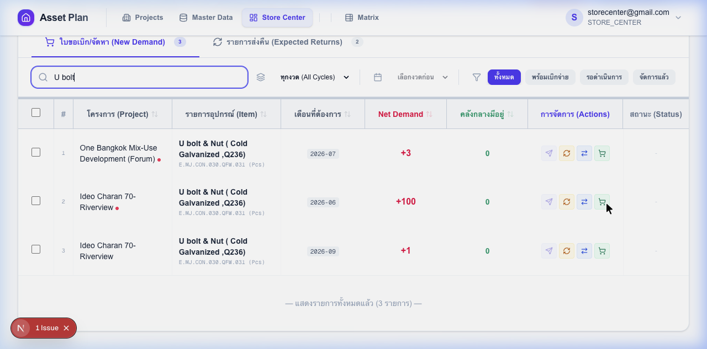
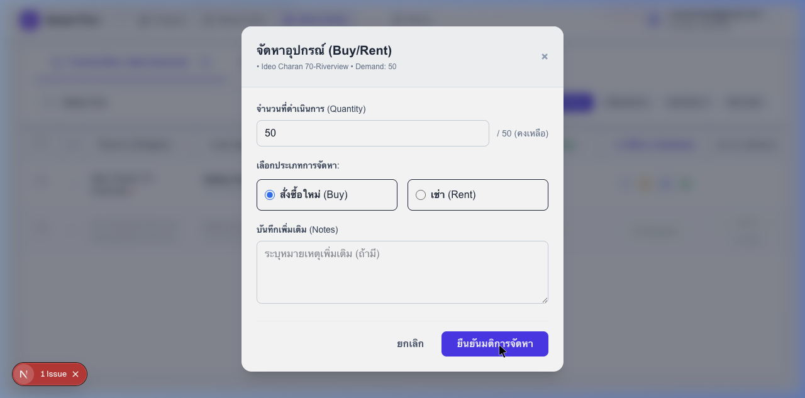
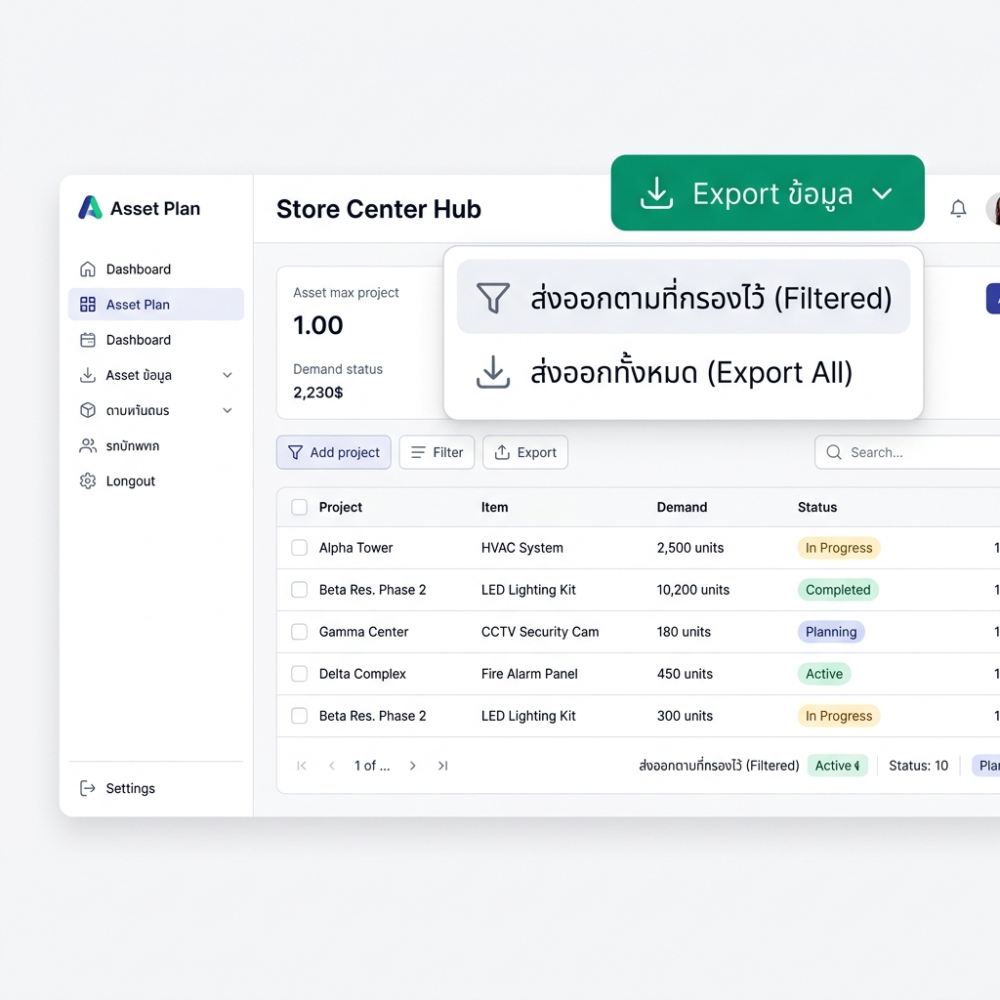

การบริหารจัดการพัสดุรวมทั้งบริษัทและการตัดสินใจจัดหา
หน้า Dashboard จะแสดงรายการพัสดุที่โครงการต่างๆ ต้องการ (ที่ผ่านการอนุมัติจาก PM แล้ว) โดยแยกตามรายการอุปกรณ์และเดือนที่ต้องการใช้

เจ้าหน้าที่สามารถเลือกดำเนินการกับพัสดุแต่ละรายการได้ดังนี้:

เจ้าหน้าที่สามารถจัดการสถานะของงวดงาน (Open/Closed) ในเมนู Job Management เพื่อควบคุมช่วงเวลาการวางแผนของแต่ละไซต์
เจ้าหน้าที่สามารถส่งออกรายงานในรูปแบบ Excel เพื่อสรุปรายการความต้องการและผลการดำเนินการได้ 2 รูปแบบ:
ข้อมูลเพิ่มเติมในไฟล์ Excel: ไฟล์ที่ส่งออกจะมีคอลัมน์ "สถานะการดำเนินการ" (สรุป Action ทั้งหมด) และ "หมายเหตุล่าสุด" ช่วยให้ติดตามสถานะได้ทันทีโดยไม่ต้องเปิดระบบ
